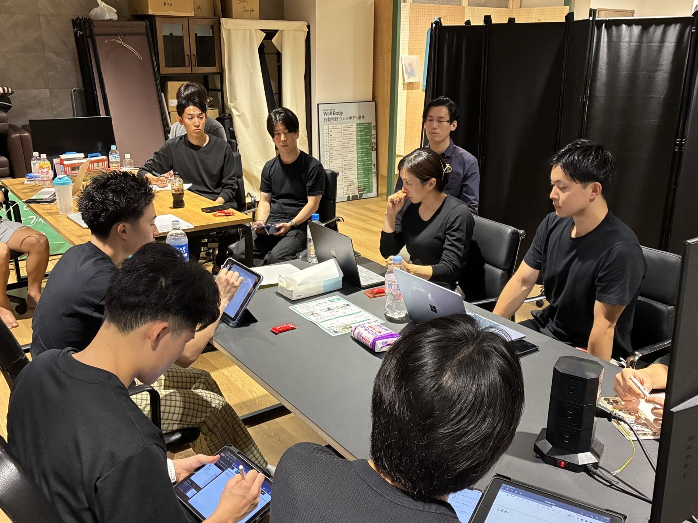
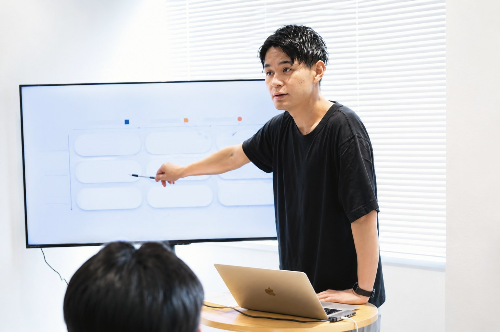
01Concept
無垢研鑽とは
「自分の武器を増やす」をコンセプトとした
実践型のコミュニティ。
ただ一方的に知識を学ぶだけでなく、実際に活動して得られた成果や課題をメンバーで共有して、キャリアを前に進めるための場所です。
大切にしている5つのこと
- 01
マウントを取らない
肩書きや経歴で測らない。だれもが対等に学び合う。
- 02
熱量の伝播
誰かの本気が、次の誰かを動かす。
- 03
成功の共有
うまくいった実践は、みんなの財産にする。
- 04
対面第一
画面越しでは伝わらないものを、直接会って交換する。
- 05
挑戦を称える
結果だけでなく、踏み出したこと自体を讃える。
02Activity
活動内容
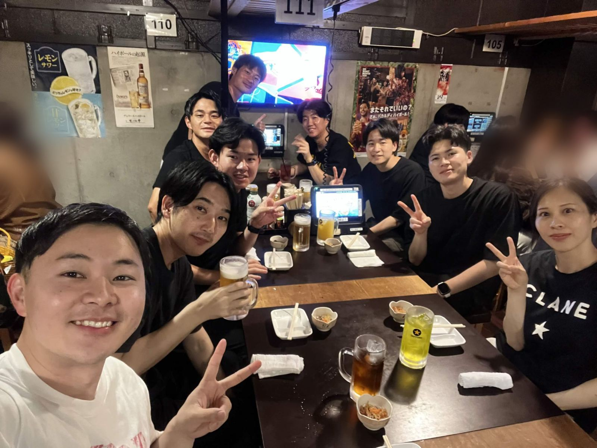
02
懇親会
定例会のあとは飲み会へ。キャリアのリアルな話や相談が飛び交います。
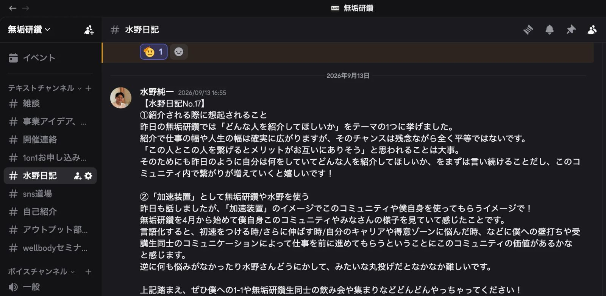
03
Discord
定例会の間も、情報共有・質問・相談をオンラインで。
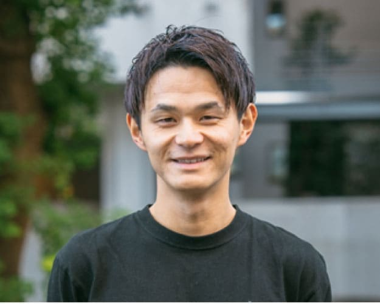
04
水野との1on1
キャリア相談や事業プランの壁打ちを一対一で。
初回無料／2回目以降 3,300円（税込）
定例会でやっていること
これまでのテーマ（一部）
講義
価格設定の考え方
自分のサービスの値段をどう決めるか。続編として「続・価格の決め方」も。
仕事の作り方
自分にできることを、市場やトレンドとぶつける。企業向けサービスの考え方も。
水野の実例
2年目でフットサル選手・Jリーガーのパーソナルにつなげるまで。
紹介のされ方
「この仕事ならこの人」と思い出される自分になるには。
ビジネス会食の大切さ
メンバーと水野の2人による講義。
話の聞き方
相手から話を引き出すための聞き方。
ワーク
目標設定ワーク
3人1組で。先輩期は進捗と工夫を、新しい期は目標とその理由・課題を共有。
自分を一言で表すプレゼン
自分が何者かを、短い言葉にして伝える。
他己紹介
2人1組で相手の話を聞き、全員の前で相手を紹介する。
成果報告
この1ヶ月の成果報告
うまくいったことも、失敗したことも共有する。
進捗報告（希望者）
小さな一歩でも大歓迎。
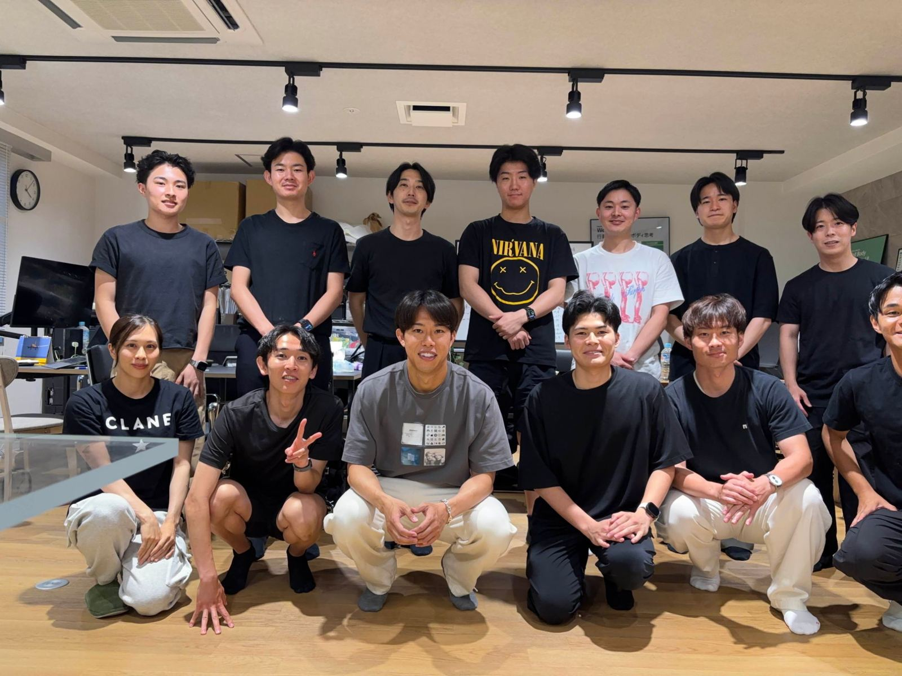
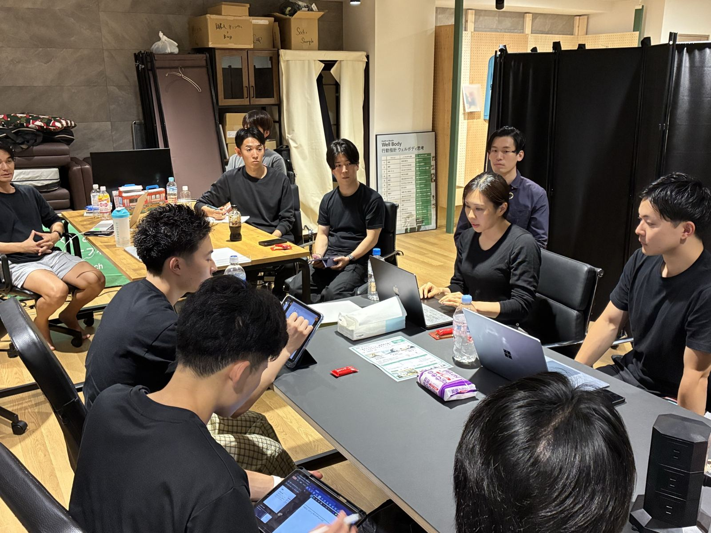
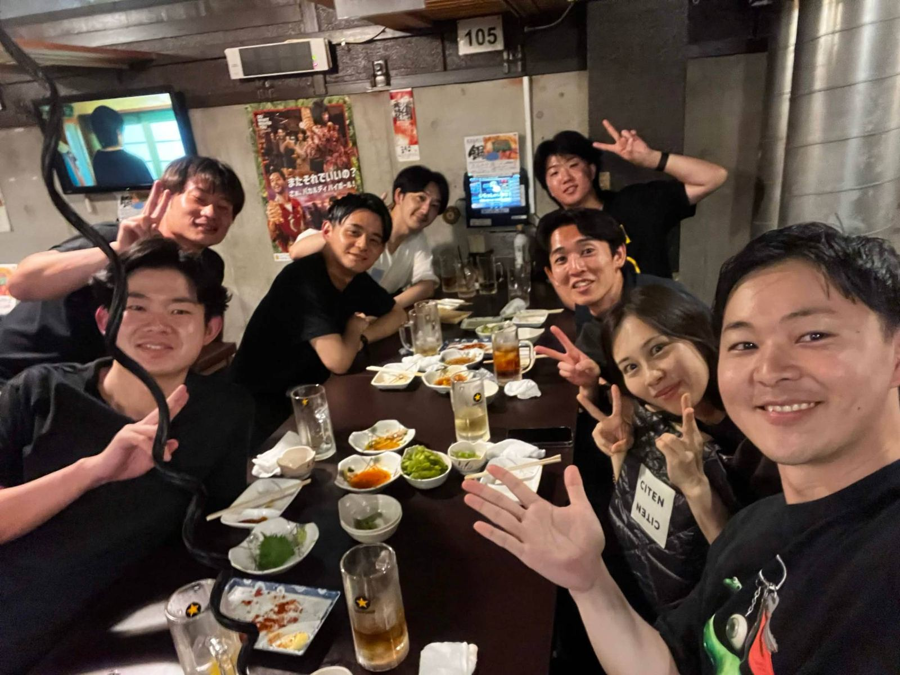
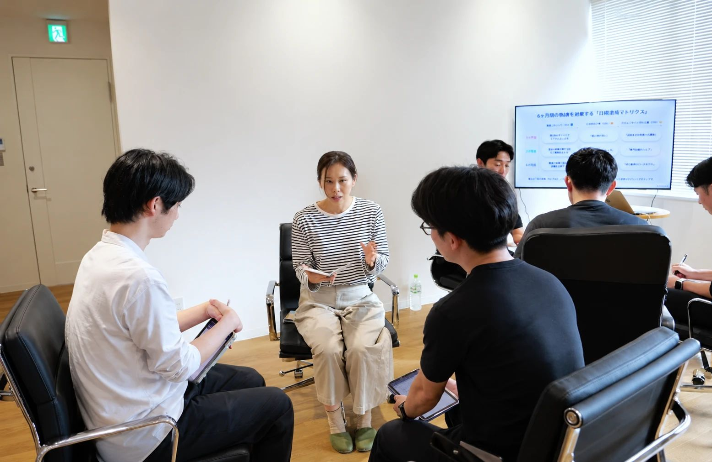
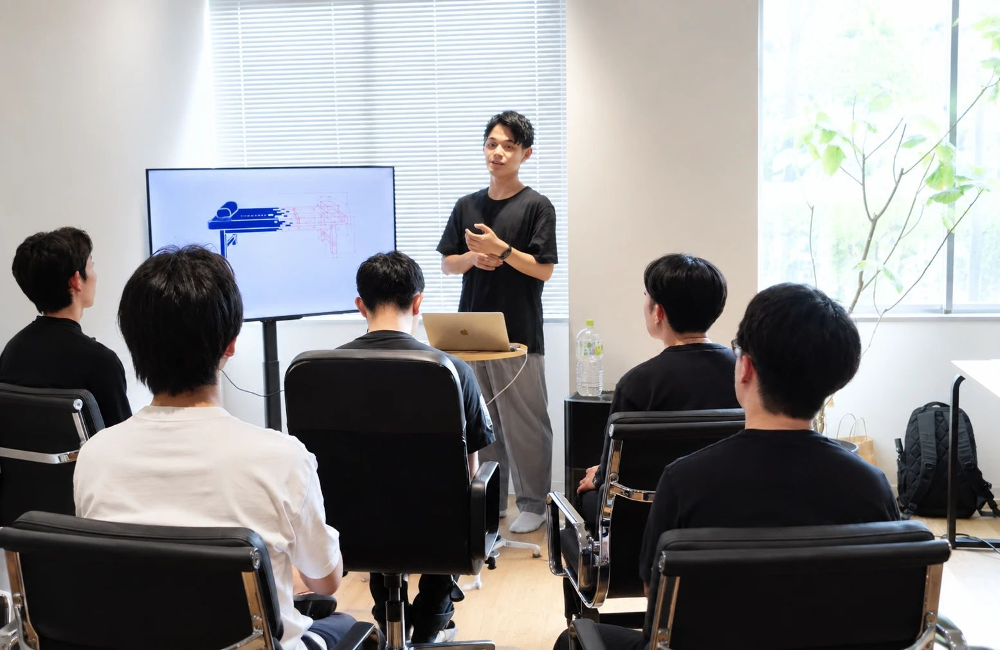
03Founder
代表紹介
主宰水野 純一
理学療法士。Well Body株式会社 代表取締役。オフィス出張施術「Offi-Stretch」（累計70社以上に導入）と店舗「CEL」を運営し、サッカー日本代表選手や一流経営者のケアも担当。
多くのセラピストと話す上で「キャリアに悩んでいるがどう行動するべきか分からない」といった声を多く聞き、「自分の武器を増やす」をコンセプトに無垢研鑽を立ち上げ。似た境遇のセラピスト同士が集まり、それぞれの目標に向けて研鑽を積む場になっている。
メンバーに声がかかる案件の例
- アーティストのツアー帯同 要確認
- Well Body事業の補助スタッフ 要確認
- プロサッカー選手のパーソナル担当者の育成 要確認
※ 案件の紹介は、入会によってお約束するものではありません。
ポッドキャストで聴く
無垢研鑽とは何か
コミュニティの成り立ちと、何をする場なのかを代表・水野が説明しています。
2回目の定例会を終えて
実際の定例会がどんな雰囲気で、何を話したのかの振り返りです。
メンバー2人の活躍
入会後に動き出したメンバーが、どんな成果につながったのかを紹介しています。
04Members
どんな人が参加している？
学生から経験10年以上まで。理学療法士・作業療法士・トレーナーが参加しています。
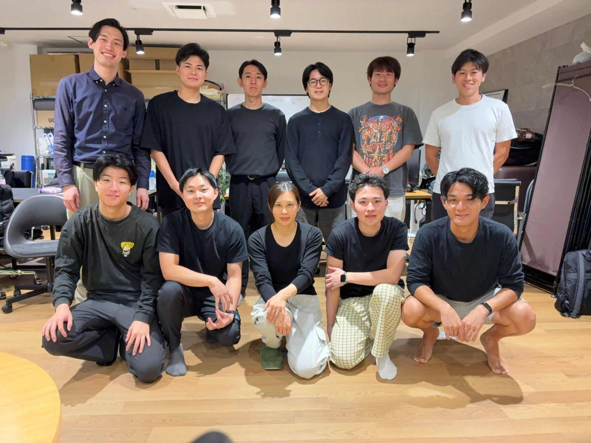
職種
- 理学療法士13人81%
- 作業療法士1人6%
- トレーナー兼PT学生1人6%
- 学生1人6%
経験年数
- 学生1人6%
- 1〜2年目3人19%
- 3〜5年目2人12%
- 6〜9年目6人38%
- 10年以上4人25%
主な働き方複数回答
1人が複数を兼ねているため、合計は100%を超えます。
関心のある領域複数回答
入会した理由複数回答
入会して得られたもの
- 88%セラピスト同士の
つながり - 62%相談相手・
目標にする人 - 50%キャリアの
選択肢の広がり
出典：無垢研鑽 メンバーアンケート（16名回答）
メンバーの声
マウントを取らないというルールがあり、1年目の自分にも経験のある方々が優しく関わってくれる。とても居心地の良い場所です。
作業療法士・1〜2年目ついていけるか不安でしたが、実際はお互いを尊重し合いながら、さまざまな意見をもらえる環境でした。
理学療法士・3〜5年目熱意あるセラピストがフラットに意見交換できる場。やりたいことを相談・実践するのに、抵抗が全くありません。
理学療法士・10年以上医療の世界では「自分の専門分野が正しい」となりがち。ここはそれぞれの経験や専門性を尊重しながら意見交換できるところに魅力を感じました。
理学療法士・6〜9年目専門的な治療技術を学ぶ場かと思っていたら、人との関わり方や考えの言語化など、本質的な部分を考える機会が多かった。
学生水野さんの真面目な部分と面白い部分が、周りにいい雰囲気を生んでいて、すごく楽しいです。
理学療法士・10年以上入会後に実現したこと
- 女子プロサッカー選手の担当を開始、転職も実現理学療法士・6〜9年目
- セミナー登壇で約500人を集客、副業を2つ開始
- 独立を決意理学療法士・10年以上
- 整形外科でのアルバイト、サッカートレーナーのインターンへ学生
- 考えていたことを行動に移し、地域の病院でセミナー開催をサポート理学療法士・6〜9年目
- InstagramなどのSNS発信をスタート（複数名）
メンバーインタビュー
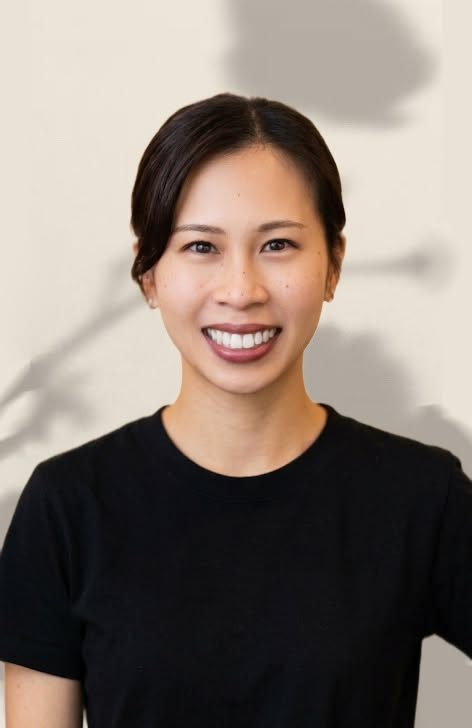
大石 今日子さん
フリーランス／企業への出張ケア・整形外科・格闘家のパーソナルほか
- 現在の働き方
- フリーランスとして企業に出張し、従業員の方のフィジカルケア（オフィストレッチ）や整形外科勤務、格闘家のパーソナルケア、アクロバットレッスン、アーティストのツアー帯同に従事。
- 参加した理由
- VIP対応で気をつけることや、自分で仕事を取りに行くために必要なことなど、ビジネススキルを強化したく、水野さんから学びたいと思ったから。
- 得たもの・実績
- 自費領域での値段設定の考え方や目標設定について、話を聞く力を学んだ。実績は、プロの格闘家のパーソナルケア、アーティストのツアー帯同。
- 入会を考えている方へ
- マウントを取り合わず、積極的に質問したり意見交換ができるコミュニティです。もっと成長したい・色々なことに挑戦してみたいけど何から始めたらいいのかわからない方や、様々な活動をしているセラピストと繋がりたい方は特におすすめです。行動あるのみ！
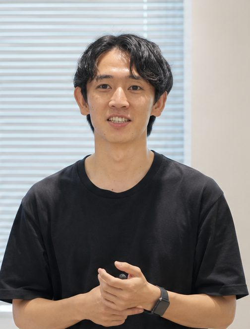
舩川 智紀さん
自費の整体院で整体・ピラティスを担当／月1回 Offi-Stretchにも参加
- 現在の働き方
- 自費の整体院で整体とピラティスを行っています。また、月に1回ほどOffi-Stretchに参加させていただいています。
- 参加した理由
- 理学療法士としても人としても成長したいと思ったからです。地方のクリニックから自費の整体院に転職し、なんとなくこのままじゃ良くないなと思っていました。そんな中、Xで水野さんと無垢研鑽のことを知り、自分のキャリアの可能性を広げたり、他の理学療法士の方との繋がりを作ったり、サッカー選手を担当してみたいという目標を達成できるのではないかと思い参加しました。
- 得たもの・実績
- このコミュニティに入ってから、女子プロサッカー選手を担当することができました。自分の武器を見つける、それを相手に伝える、施術に対する準備などを水野さんから学び、それらを上手く活かせたと思います。また横のつながりが増え、様々な分野の方と繋がることでPTとしての考えも広く深くなり、同じように目標を持って頑張っている方達と話すことでモチベーションが高くなりました。
- 入会を考えている方へ
- 現状をなんとなく変えたい、新しい事に挑戦したいけど何をしていいかわからない、キャリアの幅を広げたい方には特にオススメだと思います。このコミュニティの1番の良さは水野さんの人柄と、それが同じように他のメンバーにもあることだと思います。そして、どのメンバーも皆さん向上心があります。ぜひ一緒に繋がりを増やし、お互いの目標に向かって一緒に頑張りましょう！
05For You
こんな方におすすめ
- キャリアに迷っている、停滞感がある
- 職場の外に、相談できる人・目標にしたい人がほしい
- 病院・クリニック以外のさまざまなキャリアを知りたい
- セラピスト同士のつながりがほしい
- やりたいことはあるのに、どう動けばいいか分からない
経験年数は問いません。学生・1年目のメンバーも参加しています。
06Join
料金・入会の流れ
2期生 募集中
募集期間 2026年10月〜11月／定員 最大5名
- 月会費
- 1,650円（税込）
- 入会金
- 0円
- 面談
- 無料
税抜 1,500円
- 1
水野と
オンライン面談 要確認：所要時間
- 2
入会手続き
要確認：審査・支払方法
- 3
Discord招待・
定例会へ
07FAQ
よくある質問
仕事が忙しく、時間が取れるか不安です。
対面は月1回の定例会（原則 第2土曜 15:00〜18:00）のみ。それ以外はDiscordで自分のペースで参加できます。
なお、欠席された回の録画配布などは行っていません。
経験が浅くてもついていけますか？学生でも大丈夫？
大丈夫です。「マウントを取らない」がルールで、学生や1年目のメンバーも参加しています。学生の方も、条件は他のメンバーと同じです。
理学療法士以外でも参加できますか？
職種の制限はありません。理学療法士のほか、作業療法士やトレーナーのメンバーも参加しています。
費用はどのくらいかかりますか？
月会費1,650円（税込）で、入会金はかかりません。入会前の面談も無料です。
遠方に住んでいても参加できますか？
定例会の会場は東京・南青山です。対面での参加を大切にしているため、定例会に通える地域にお住まいの方におすすめしています。
退会はいつでもできますか？
要確認：退会方法・最低在籍期間